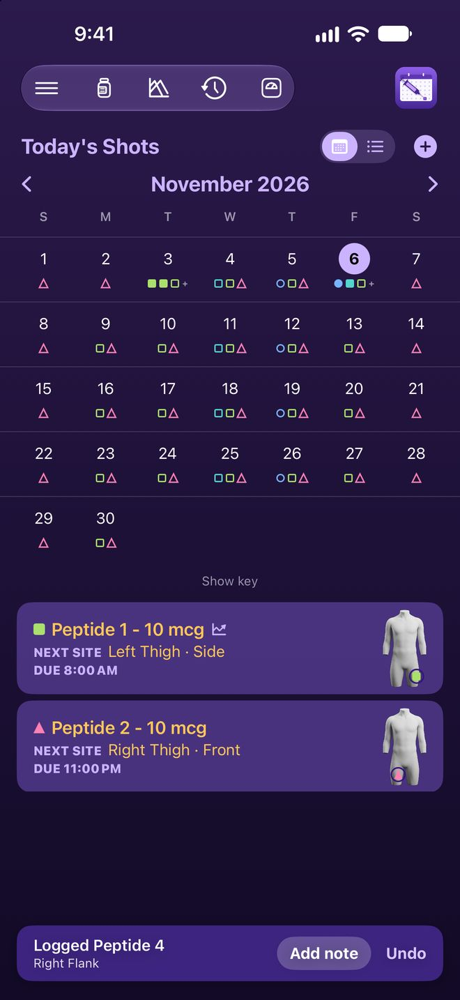

Never miss a shot
Let's face it, you're busy and a once-a-week shot is easy to forget. Nexdose puts your GLP-1 shot on a calendar, reminds you on shot day, and logs it in one tap. Next week, you'll know.
Get Nexdose freeFree for iPhone, with an Apple Watch app. No account, no ads, no subscription.

Built around a weekly shot
- Set it once. Choose Weekly and pick the day and time you inject. Start from your last shot and Nexdose picks up from there.
- Shot-day reminder at the time you choose.
- Life happens. Move a single dose to another day, or skip it, and your schedule carries on.
- Log from anywhere: a single tap in the app, tap a Lock Screen widget, tap your Apple Watch, or tell Siri to do it for you.
Track what changes
- View weight loss, body fat loss and muscle gain against a goal, with charts from one month to all time.
- Dose increases. Plan your steps up once, and Nexdose moves you to the next dose on schedule. Plus
- Pens and vials. Know how much is left before you run out. Plus
- Reports for your provider. Export your history as a CSV, or as a clean PDF. Plus
Private by design
No account, no ads, and no tracking. Your data stays on your iPhone, with optional backup to your own iCloud.
Works with
Semaglutide, tirzepatide and other weekly or daily injections. Nexdose is a tracking tool and doesn't give medical advice. It helps you follow your provider's instructions.
Questions
Is it free?
Yes. The core tracker is free. Plus is a one-time purchase, not a subscription.
Does it work for daily injections too?
Yes: daily, weekly, monthly, every weekday or custom, with up to 3 doses a day.